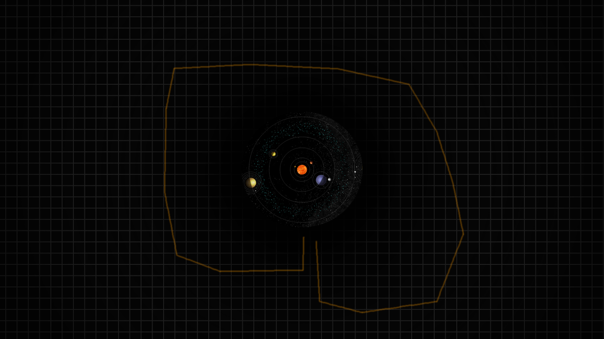

Exploration augmentée
Version 1.0 - Amélioré d'Ogame
Explications
Le but de l’exploration est de trouver des lieux inédits, cachés, dans le système solaire. Pour cela, le joueur devra envoyer une flotte qui va scanner et trouver ces lieux.
Une fois que le joueur a sélectionné ses vaisseaux, il visualisera une carte du système solaire. Point par point, il pourra définir une « route » pour sa flotte (voir photo exemple). La distance et le temps minimum requis pour parcourir ce chemin sont calculés. Le joueur peut choisir de le parcourir plus lentement s’il le souhaite. Plus la flotte va lentement, plus elle est susceptible de trouver des lieux intéressants.
Durant le voyage de la flotte, la carte est mise à jour avec lieux trouvés. Ces lieux pourront être des ceintures d’astéroïdes, des bases stellaires abandonnées (ou non) de PNJs, des trous de ver, et même des planètes colonisables.
Dès l'instant où ces lieux sont ajoutés sur la carte, le joueur pourra y envoyer des flottes. Ils resteront affichés jusqu'à ce qu'il n'y ait plus rien à y récupérer.
Exemple
La photo ci-dessous est un exemple de carte avec le système solaire au centre et, en orange, le chemin définit par le joueur pour sa flotte.

Améliorations
Si vous avez d'autres idées, que vous désirez poster un avis ou un commentaire, n'hésiter pas à me contacter.